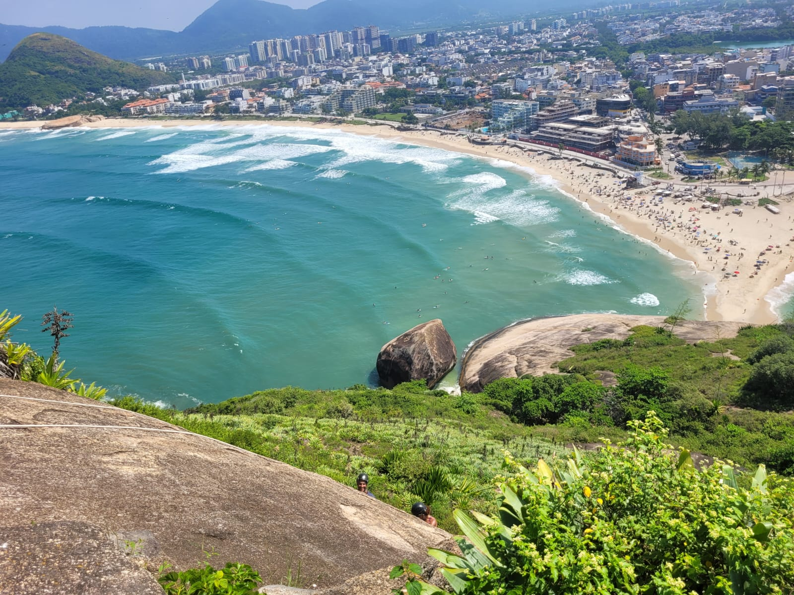

FÁCIL
📍 Rio de Janeiro - RJ
Pedra do Pontal: A península que vira ilha no Recreio dos Bandeirantes
Eternizada na música brasileira, a Pedra do Pontal ergue-se imponente a cerca de 120 metros de altitude, dividindo duas das praias mais queridas pelos surfistas cariocas: o Recreio e a Macumba. Ligada ao continente por uma estreita faixa de areia que some completamente quando a maré sobe, a pedra proporciona uma das trilhas rápidas mais recompensadoras do Rio, com uma visão panorâmica espetacular que se estende da Barra da Tijuca até a Prainha.
🥾 Trilha
⏱️ 1h